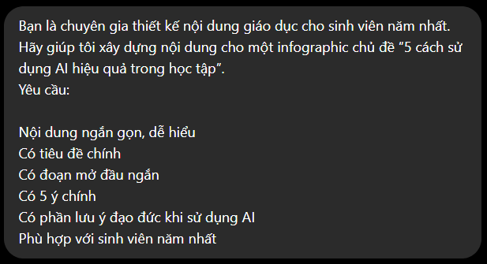
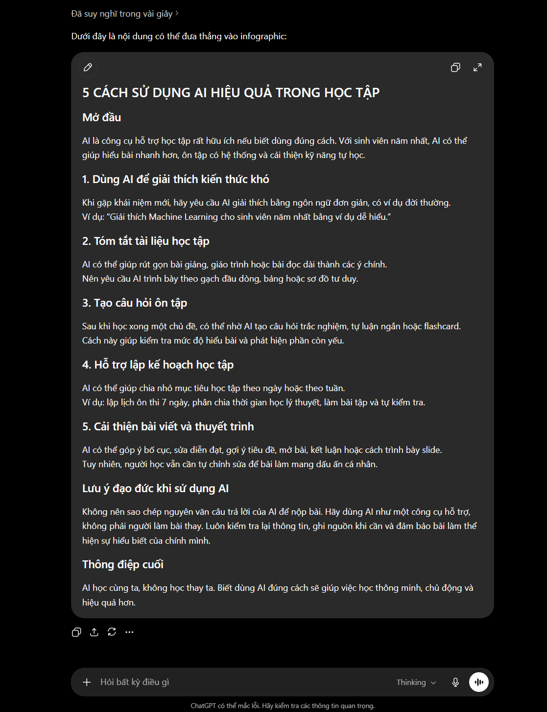
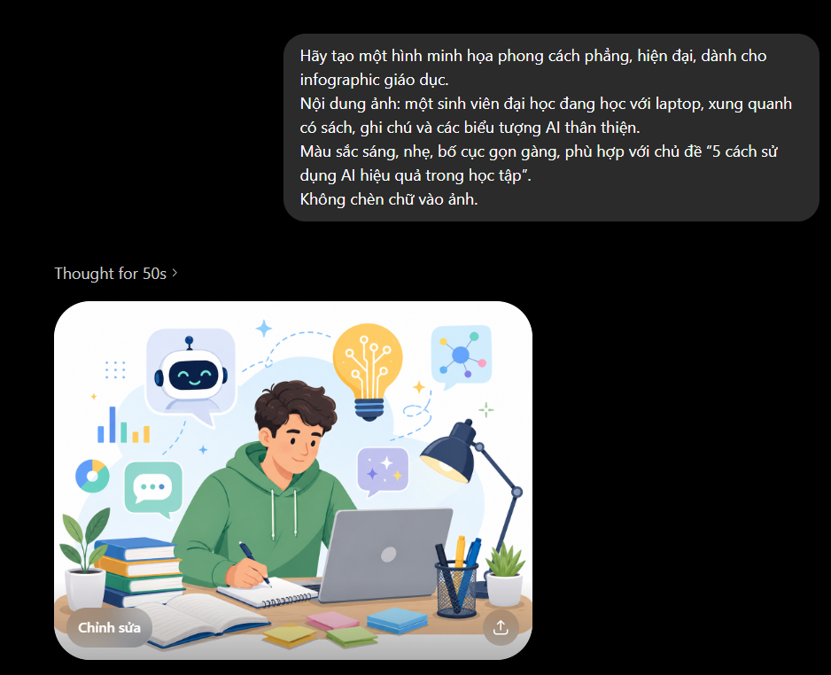
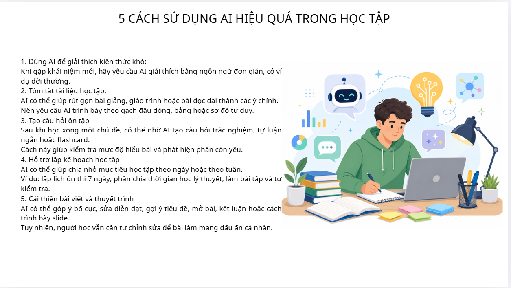
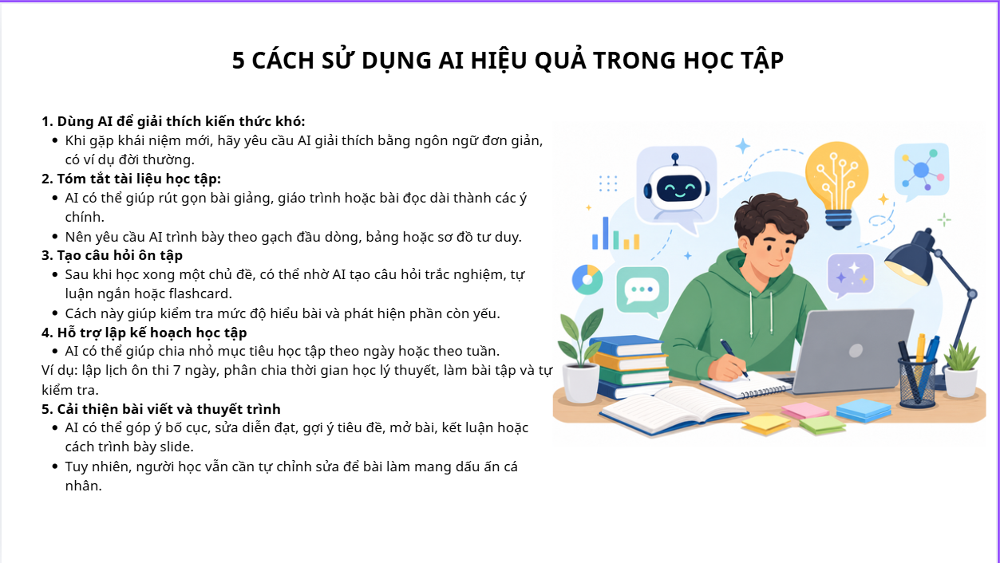

1. Mục tiêu & Sản phẩm thực hiện
Trong bài thực hành này, em thực hiện một sản phẩm sáng tạo nội dung số với sự hỗ trợ của các công cụ AI tạo sinh. Sản phẩm em chọn là infographic với chủ đề “5 cách sử dụng AI hiệu quả trong học tập”.
Mục tiêu của sản phẩm là giúp sinh viên năm nhất hiểu cách dùng AI như một công cụ hỗ trợ học tập, ví dụ: tóm tắt tài liệu, giải thích khái niệm khó, lập kế hoạch học tập, tạo câu hỏi ôn tập và cải thiện bài viết. Nội dung được trình bày ngắn gọn, dễ nhìn, phù hợp để đưa vào portfolio học tập cá nhân.
- Sản phẩm Infographic giáo dục về cách sử dụng AI hiệu quả trong học tập.
- Đối tượng Sinh viên năm nhất cần làm quen với AI trong quá trình học.
- Tiêu chí Nội dung ngắn gọn, trực quan, có kiểm chứng và có dấu ấn cá nhân.
| Công cụ | Vai trò |
|---|---|
| ChatGPT | Gợi ý nội dung, tiêu đề và bố cục infographic. |
| Công cụ tạo ảnh AI | Tạo hình minh họa chủ đề học tập với AI. |
| Canva AI | Hỗ trợ thiết kế bố cục, màu sắc và hoàn thiện infographic. |

2. Quá trình sử dụng AI
2.1. Sử dụng ChatGPT để tạo nội dung
Em sử dụng ChatGPT để tạo bản nháp nội dung cho infographic. Prompt đã dùng:
Bạn là chuyên gia thiết kế nội dung giáo dục cho sinh viên năm nhất. Hãy giúp tôi xây dựng nội dung cho một infographic chủ đề “5 cách sử dụng AI hiệu quả trong học tập”. Nội dung cần ngắn gọn, dễ hiểu, gồm tiêu đề, mô tả ngắn, 5 ý chính và phần lưu ý đạo đức khi dùng AI.
Kết quả ChatGPT đưa ra khá đầy đủ, gồm 5 cách sử dụng AI trong học tập: tóm tắt tài liệu, giải thích khái niệm, lập kế hoạch học tập, tạo câu hỏi ôn tập và cải thiện bài viết. Tuy nhiên, nội dung ban đầu còn hơi dài nên em đã tự rút gọn lại để phù hợp với dạng infographic.
Nội dung sau khi chỉnh sửa
- Tóm tắt tài liệu: Dùng AI để rút ra ý chính từ tài liệu dài, sau đó tự kiểm tra lại với nguồn gốc.
- Giải thích khái niệm khó: Yêu cầu AI giải thích bằng ví dụ đơn giản, dễ hiểu.
- Lập kế hoạch học tập: Nhờ AI chia nhỏ nhiệm vụ và sắp xếp thời gian học.
- Tạo câu hỏi ôn tập: Dùng AI tạo câu hỏi trắc nghiệm, tự luận hoặc flashcard.
- Cải thiện bài viết: Nhờ AI góp ý diễn đạt, bố cục và lỗi trình bày.

2.2. Sử dụng AI tạo hình ảnh
Sau khi có nội dung, em dùng công cụ tạo ảnh AI để tạo hình minh họa cho infographic. Prompt đã dùng:
Create a clean modern illustration of a university student studying with a laptop, surrounded by books, notes and friendly AI assistant icons. Flat vector style, bright soft colors, suitable for an educational infographic. No text in the image.
Kết quả AI tạo ra hình ảnh sinh viên học tập cùng laptop, sách vở và các biểu tượng công nghệ. Em chọn hình có bố cục đơn giản nhất để đưa vào infographic, vì một số hình khác có quá nhiều chi tiết hoặc tạo chữ không rõ ràng.
Sau đó, em chỉnh lại kích thước hình trong Canva, đặt hình ở phần đầu infographic để tạo điểm nhấn nhưng không làm rối nội dung chính.

2.3. Sử dụng Canva AI để thiết kế
Em sử dụng Canva AI để chọn mẫu infographic dọc, sau đó đưa nội dung và hình ảnh đã chuẩn bị vào thiết kế. Canva AI hỗ trợ gợi ý bố cục, màu sắc và vị trí các khối nội dung.
Tuy nhiên, em không dùng nguyên mẫu có sẵn mà chỉnh sửa lại:
- Đổi màu chủ đạo sang xanh dương và trắng để phù hợp với chủ đề công nghệ.
- Chia nội dung thành 5 khối rõ ràng.
- Thêm biểu tượng nhỏ cho từng ý.
- Rút ngắn câu chữ để dễ đọc hơn.
- Thêm phần lưu ý đạo đức ở cuối infographic.
- Kiểm tra lại chính tả, căn lề và độ tương phản.

3. So sánh các công cụ AI đã sử dụng
| Tiêu chí | ChatGPT | AI tạo hình ảnh | Canva AI |
|---|---|---|---|
| Điểm mạnh | Tạo ý tưởng nhanh, nội dung rõ. | Tạo hình minh họa đẹp, trực quan. | Dễ thiết kế, có nhiều mẫu sẵn. |
| Hạn chế | Nội dung đôi lúc dài, chung chung. | Có thể tạo chi tiết thừa hoặc lỗi chữ. | Mẫu dễ bị rập khuôn nếu không chỉnh. |
| Cách em xử lý | Rút gọn, viết lại theo ý mình. | Chọn ảnh đơn giản, bỏ ảnh lỗi. | Tự chỉnh màu, bố cục, font chữ. |
Qua so sánh, em thấy mỗi công cụ phù hợp với một giai đoạn khác nhau. ChatGPT hiệu quả nhất ở bước tạo ý tưởng và nội dung. Công cụ tạo ảnh AI giúp tiết kiệm thời gian tìm hoặc tự vẽ hình minh họa. Canva AI phù hợp ở bước hoàn thiện sản phẩm vì dễ chỉnh sửa và trình bày trực quan.
Tuy vậy, cả ba công cụ đều cần sự kiểm soát của người dùng. Nếu dùng nguyên kết quả AI, sản phẩm có thể thiếu dấu ấn cá nhân. Vì vậy, em chỉ sử dụng AI để hỗ trợ, còn bản cuối cùng được chỉnh sửa theo mục tiêu và thẩm mỹ cá nhân.
4. Vai trò của AI và đóng góp cá nhân
AI giúp quá trình sáng tạo nhanh hơn, đặc biệt ở bước lên ý tưởng, viết bản nháp và tạo hình minh họa. Thay vì bắt đầu từ trang trắng, em có thể dựa vào gợi ý của AI để chọn lọc và phát triển sản phẩm.
Tuy nhiên, AI không thay thế hoàn toàn vai trò của người học. Em vẫn phải tự quyết định chủ đề, chọn nội dung phù hợp, chỉnh sửa câu chữ, kiểm tra tính chính xác, chọn hình ảnh và hoàn thiện bố cục. Sản phẩm cuối cùng có sự hỗ trợ của AI nhưng phần chỉnh sửa, lựa chọn và hoàn thiện chủ yếu do cá nhân thực hiện.
| Thành phần | AI hỗ trợ | Cá nhân chỉnh sửa |
|---|---|---|
| Ý tưởng nội dung | 40% | 60% |
| Hình minh họa | 60% | 40% |
| Bố cục thiết kế | 40% | 60% |
| Hoàn thiện sản phẩm | 30% | 70% |
Nhìn chung, đóng góp cá nhân chiếm trên 50% vì em không sao chép nguyên văn đầu ra của AI mà có chỉnh sửa, chọn lọc và tổ chức lại thành sản phẩm hoàn chỉnh.
5. Vấn đề đạo đức khi sử dụng AI
Khi sử dụng AI trong học tập và sáng tạo nội dung, cần chú ý đến tính minh bạch, độ chính xác và trách nhiệm cá nhân. Người học không nên sao chép nguyên văn kết quả AI rồi xem đó là sản phẩm hoàn toàn của mình. AI có thể hỗ trợ tạo ý tưởng, nhưng người dùng vẫn phải hiểu, kiểm tra và chỉnh sửa nội dung.
Một vấn đề khác là thông tin AI đưa ra chưa chắc luôn đúng. Vì vậy, với những nội dung quan trọng, cần đối chiếu lại với tài liệu gốc hoặc nguồn đáng tin cậy. Ngoài ra, hình ảnh AI tạo ra cũng cần được xem xét kỹ để tránh lỗi chi tiết, lỗi chữ hoặc nội dung không phù hợp.
Trong bài này, em sử dụng AI như công cụ hỗ trợ sáng tạo, không dùng AI để làm thay toàn bộ. Em có ghi lại prompt, kết quả, quá trình chỉnh sửa và thể hiện rõ phần đóng góp cá nhân trong sản phẩm cuối cùng.
6. Sản phẩm cuối cùng và tự đánh giá
Sản phẩm cuối cùng là infographic “5 cách sử dụng AI hiệu quả trong học tập”. Infographic có bố cục dọc, màu sắc thống nhất, gồm phần tiêu đề, hình minh họa, 5 nội dung chính và lưu ý đạo đức khi sử dụng AI.

Bài học rút ra / Kỹ năng đạt được
- Biết tích hợp AI vào quy trình sáng tạo nội dung số.
- Hiểu giới hạn của AI và tầm quan trọng của kiểm chứng.
- Cải thiện khả năng biên tập, chọn lọc và hoàn thiện sản phẩm.